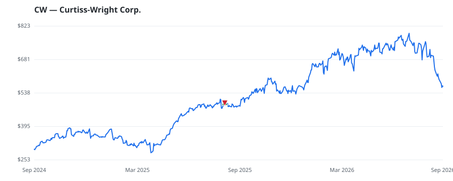

bullish · bearish · n/a — dots: price>SMA10 · SMA10>SMA50 · SMA50>SMA200 · up>down volume (20d)
Capital Goods · large cap
Members who bought CW earned a dollar-weighted +15.3% from their disclosure dates, versus +18.8% for the S&P 500 over the same holding windows (-3.5% alpha).

▲ green = a disclosed purchase · ▼ red = a disclosed sale (plotted on disclosure date)
Curtiss-Wright Corporation delivers engineered products and services to commercial, defence, power generation, and other industrial markets. It offers industrial vehicle components, control systems, weapons handling systems, pumps, valves, and other solutions. The company has three reportable segments based on the markets serviced: Naval & Power, which provides coolant pumps, power-dense compact motors, generators, secondary propulsion systems, pumps, pump seals, valves, control rod drive mechanisms, and fastening systems that also generate maximum revenue for the company; its other segments a MISC INDUSTRIAL & COMMERCIAL MACHINERY & EQUIPMENT · website
| Revenue | $3.5B | Net income | $484.2M |
|---|---|---|---|
| Operating income | $633.5M | Diluted EPS | $12.87 |
| Assets | $5.2B | Equity | $2.5B |
| Member | Chamber | Out-performer | Disclosed buys $ | Return on buys |
|---|---|---|---|---|
| Lisa McClain | house | — | $8K | +15.3% |
Disclosed $ figures are bracket midpoints — filings report ranges (e.g. $1,001–$15,000), not exact amounts.
This name produced 0.0% of the ranked funds’ total alpha.
| Fund | Fund alpha vs SPY | Position | % of book |
|---|---|---|---|
| BOURGEON CAPITAL MANAGEMENT LLC | +22% | $8M | 1.2% |
| CCG WEALTH MANAGEMENT, LLC | +4% | $2M | 0.4% |
| OAK ASSOCIATES LTD /OH/ | +10% | $0M | 0.0% |
| NKCFO LLC | +15% | $0M | 0.1% |
Hedge data: SEC EDGAR 13F · ranked funds beat SPY in >50% of their quarters · fund alpha = mirror-portfolio return minus SPY.